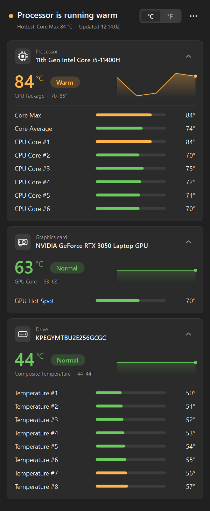

Free CPU, GPU and SSD temperature monitor for Windows
See every temperature sensor in your PC in one small window, with a one-line answer to the question that matters: is anything running too hot?
No installer, no ads, no telemetry. Windows asks for administrator permission when it starts, as it does for every hardware monitor.

Is my PC running hot? One look tells you
Most hardware monitors show hundreds of numbers. Temp Monitor shows only temperatures, grouped by device, and tells you in plain words what they mean.
A plain-English answer
The top line reads "All temperatures are normal", or names the device that's running warm or hot along with its hottest reading.
Every sensor, grouped by device
CPU package and every core, GPU core and hot spot, NVMe and SATA drives, motherboard, and DDR5 memory where supported.
Limits that fit each device
80 °C is warm for a processor but hot for an SSD. Each card is judged against limits for its own kind of hardware.
Trends, not just a number
Readings update every second. A 2-minute trend line and the session's lowest and highest values show whether a temperature is climbing or settling.
Tiny and portable
One 1.8 MB file with nothing to install. It runs on .NET Framework 4.8, which is already part of Windows 10 and 11.
Fits in with Windows
Follows your light, dark or High Contrast setting. Switch between °C and °F, keep it always on top, and copy all readings to the clipboard.
How to check your CPU temperature on Windows 11 or 10
Windows has no built-in way to show your CPU temperature; Task Manager only shows the temperature of a dedicated graphics card. With Temp Monitor it takes three steps.
-
Download TempMonitor.exe
Save it anywhere you like. There's nothing to install and nothing to uninstall later.
-
Run it and click Yes
Reading hardware sensors needs administrator rights. If SmartScreen warns about an unrecognized app, click More info, then Run anyway; the exe isn't code-signed.
-
Install PawnIO when asked
CPU and motherboard sensors need the free, signed PawnIO driver. A yellow bar offers to install it, and the installer is checked against a known checksum first.
Your CPU temperature is the large number on the Processor card: "CPU Package" on Intel processors, "Core (Tctl/Tdie)" on AMD Ryzen. GPU and drive temperatures appear even without PawnIO.
What temperature is too hot?
Each device's label follows its main reading: CPU package, GPU core, drive composite temperature and so on. These are the limits Temp Monitor uses.
Normalbelow the warm limitWarmfrom the warm limitHotfrom the hot limit
| Device | Warm from | Hot from |
|---|---|---|
| Processor (CPU) | 80 °C | 90 °C |
| Graphics card (GPU) | 75 °C | 85 °C |
| Drive (SSD or hard drive) | 55 °C | 70 °C |
| Memory (RAM) | 60 °C | 75 °C |
| Motherboard and other | 60 °C | 80 °C |
GPU hot spot and memory junction sensors normally read about 10 °C above the core, so their limits are 10 °C higher. These are general guides rather than manufacturer limits: a laptop CPU at 85 °C during a game is usually fine, but the same temperature while the PC is idle is worth a look.
Questions
Is Temp Monitor free and safe?
Yes. It's free and open source under the MIT license, with no ads, no account and no telemetry. The only time it goes online is to download the PawnIO installer, and only if you ask it to. Every release is built from the public source code by GitHub Actions and published with its SHA-256 checksum.
Why does it need administrator rights?
CPU and motherboard sensors can only be read with low-level hardware access, which Windows reserves for administrators. HWiNFO, HWMonitor and LibreHardwareMonitor ask for the same permission.
What is PawnIO?
PawnIO is a signed, open-source driver that lets programs read CPU and motherboard sensors safely. It replaces the old WinRing0 driver, which Windows Defender now flags as vulnerable, and other monitoring tools use it too. You can uninstall it any time from Settings, Apps.
Which hardware does it support?
Temp Monitor reads sensors through LibreHardwareMonitorLib, so it works with most Intel Core and AMD Ryzen processors, NVIDIA and AMD graphics cards, NVMe and SATA drives, and many motherboards, in laptops and desktops. Virtual machines don't expose temperature sensors.
Why are my CPU temperatures missing?
Usually because PawnIO isn't installed yet; use the yellow bar at the top of the window to install it. If readings are still missing, run TempMonitor.exe --dump temps.txt and attach the file to a GitHub issue.
How is it different from HWiNFO, HWMonitor or Core Temp?
HWiNFO and HWMonitor show every sensor, including voltages, fan speeds, clocks and power, which is ideal for in-depth troubleshooting. Core Temp focuses on the processor. Temp Monitor covers the temperatures of your CPU, graphics card, drives, motherboard and memory, and keeps the screen simple enough to read in a second.
Check your PC's temperatures now
Download it, run it, and you'll know in seconds whether anything is running hot.
Requires Windows 10 version 1903 or newer, or Windows 11, on a 64-bit PC.